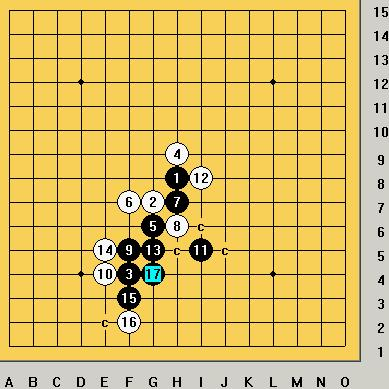

一大妖刀算杀题
#1 一大妖刀算杀题 作者：胆小的骆驼 发表时间：2008-10-17 0:38:46
=======上图对应的爱五子棋谱代码如下，以便你拆解：========
h8g7f4h9g6f7h7h6f5e4i5i8
======================================================QQ高一的一盘对局，我觉的黑的杀法挺值得学习的，变化挺多。大家想想如何杀，是有禁杀法
［ 茗弈小刀 于 2008-10-19 14:49:04 时奖励此帖[金币加 20 威望加1］
#2 Re:一大刀算杀题 作者：笑雨辰 发表时间：2008-10-17 0:52:36
看我杀得对不#3 Re:一大刀算杀题 作者：闫荣辉 发表时间：2008-10-17 1:11:11
#4 Re:一大刀算杀题 作者：五子痴 发表时间：2008-10-17 9:02:29
这种超大号刀开出来 不禁让对家有种减负的感觉！其实不然 这种镰刀暗藏玄机 也是最不好对付的妖刀之一 中后盘扩先是家常便饭
我过去研究的时候发现下面这种刀在无禁也不是黑必败！超爽 有兴趣的朋友回去拆拆
=======上图对应的爱五子棋谱代码如下，以便你拆解：========
h8h9j5
======================================================
#5 Re:一大刀算杀题 作者：雅典娜 发表时间：2008-10-17 12:51:54
笑雨辰的24手有点弱,改28位强,但黑还能杀!#6 Re:一大刀算杀题 作者：雅典娜 发表时间：2008-10-17 13:06:30
两种17手都是可以的,黑一直控制着先手,到后面2也很多,注意顺序就行了!#7 Re:Re:一大刀算杀题 作者：笑雨辰 发表时间：2008-10-18 2:10:19
引用：
原文由 雅典娜 发表于 2008-10-17 12:51:54 :
笑雨辰的24手有点弱,改28位强,但黑还能杀!
#8 Re:一大刀算杀题 作者：茗弈小刀 发表时间：2008-10-19 14:55:04
2楼，3楼的朋友都杀对了，13手直接就杀掉了。大刀是必败之刀，无禁尚可一下。